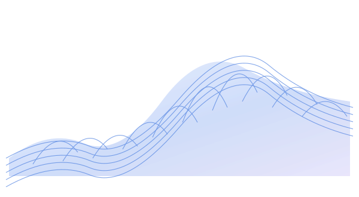

Weather Forecasting
Weather prediction and rainfall nowcasting with multimodal observations, radar data, and spatial learning.
GNN
Radar
Nowcasting
Research at the intersection of applied mathematics, numerical PDEs, machine learning, and environmental modeling.

Weather prediction and rainfall nowcasting with multimodal observations, radar data, and spatial learning.
Machine learning approaches for modeling complex physical systems, including neural operators and generative data assimilation.
AI-assisted numerical algorithms, finite element representations, and cost-aware computational methods.
Publication entries and verified links can be added to the Publications page.
View publications →Research interests include scientific machine learning, numerical methods for PDEs, and spatiotemporal forecasting.
Research overview →